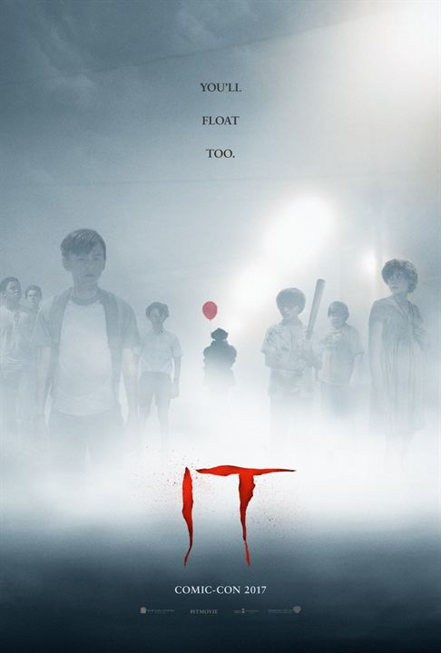

Um grupo de sete adolescentes de Derry, uma cidade no Maine, formam o auto-intitulado “Losers Club“ – o clube dos perdedores. A pacata rotina da cidade é abalada quando crianças começam a desaparecer e tudo o que pode ser encontrado delas são partes de seus corpos. Logo, os integrantes do “Losers Club” acabam ficando face a face com o responsável pelos crimes: o palhaço Pennywise.
O maior motivo de sofrimento das personagens são seus medos, que são até ideológicos: machismo, pedofilia, racismo, a intolerância religiosa e até a gordofobia, a diferença, o TOC… Enfim, uma vasta gama para dar conta, mas que, por isso, deveria ter sido tratada com mais cuidado e, talvez, profundidade, para que tivessem ainda mais força quando a criatura tomasse forma de cada uma delas.